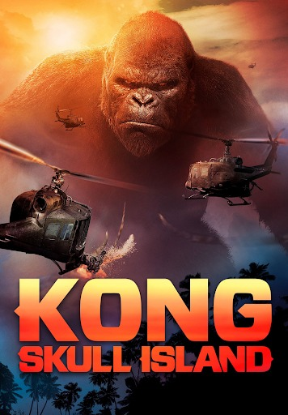

About King Kong

King Kong (キングコング Kingu Kongu?), also dubbed Titanus Kong or simply Kong, is one of the two main
protagonists (alongside Godzilla) of the MonsterVerse, and a giant great ape Titan created by Legendary Pictures who
first appeared in the 2017 film, Kong: Skull Island.Kong faced off against Godzilla before teaming up to defend against
Mechagodzilla in the 2021 film, Godzilla vs. Kong.Kong recently returned in the animated Skull Island series, which
takes place in the early 1990s during his life on Skull Island. He made a brief appearance in Monarch: Legacy of
Monsters. He returned in the sequel, Godzilla x Kong: The New Empire.
History
In 1973, he makes his first proper appearance as Preston Packard and his crew drop seismic bomb charges on the land
below to map it. Enraged, Kong attacks the helicopters, swatting them out of the air and killing many of Packard's
men, to which Packard swears vengeance against Kong. Following the conflict, Kong reappears at a lake, heavily
wounded from the earlier fight. As he washes his wounds and drinks from the lake, a Mire Squid attacks Kong, but he
manages to kill the creature by stomping on its head and proceeds to make a meal of the giant cephalopod.
Later,
Kong is seen jumping from one mountain to another as he looks over the island. Kong finds a dead Sker Buffalo being
eaten by a Skullcrawler near a large underground vent. As he is about to engage the creature, another one ambushes
Kong from behind. He kills them by throwing one to the ground, breaking its neck, and stomping the other's head.
Some time later, Weaver tries and fails to save a Sker Buffalo trapped under a downed helicopter outside the Iwi
village. Kong appears and rescues the buffalo. He encounters Weaver for the first time and looks at her curiously
before leaving her be. Later that night, he is seen sitting atop a mountain, somberly watching the aurora.
Personality
During his adolescence as seen in Kong: Skull Island, Kong is initially shown to be extremely territorial, reclusive,
and defensive. As the guardian of Skull Island, he fiercely protected its wildlife from any threats, chiefly the invasive
Skullcrawlers and the 1973 Monarch expedition team. Despite not yet fully grown, he was a capable combatant, and could
effortlessly trample the majority of Skull Island's predatory fauna. Despite this reclusive and aggressive behavior,
Kong was also shown as having a softer side and ultimately was a very lonely creature that strived for social contact.
During the 1973 expedition, Kong notably doted upon Mason Weaver after the latter had affectionately touched his face
while standing on a cliffside. This simple act visibly affected Kong, whos eyes welled up with tears. Kong would
ultimately risk his life to protect Weaver and her company from the awakened Skull Devil, and ultimately disemboweled
the creature after refusing to let it swallow the woman. The novelization of Godzilla vs. Kong reveals that, at some
point during his adolescence, Kong had developed a habit of launching the trunks of tree towards the sun, with the
goal of one day actually hitting it. Terry Notary played Kong as a lonely, burdened "14-year-old that's trapped in
the life of an adult" who is growing into his protector role.
Design
VFX designers spent eight months making Kong a powerful and sympathetic anti-hero with an element of humanity.
Director Jordan Vogt-Roberts drew inspiration from the 1933 film's design while ensuring Kong was iconic enough
to be immediately recognized. Famed creature designer Carlos Huante borrowed from the 1933 film, imbuing Kong
with orange-brown fur, a small crown, a huge brow, an exaggerated muzzle, and a wide-eyed roar. VFX supervisor
Jeff White designed Kong to be 104 feet tall so that "a human will look like a speck in the shadow of this
colossus."[12] Kong's upright posture is an intentional departure from the hunched-over posture of the silverback
gorilla, like in the 2005 film's incarnation, or of a generic "big monkey." Kong's arms are disproportionately
longer than his legs, which gives him a distinctive silhouette. Kong was designed to instill divisiveness in the
audience, who may view Kong as a threat, a savior, or a god.